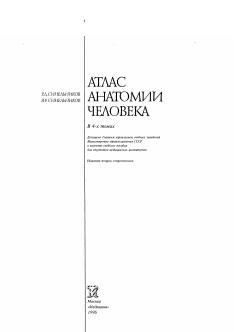

САInson anatomiyasi bo'yicha suyaklar, bo'g'imlar va mushaklar haqidagi fundamental darslikning birinchi jildi.
Mazkur birinchi jild inson anatomiyasining asosiy bo'limlari bo'lgan osteologiya (suvaklar ta'limoti), artrologiya (bo'g'imlar) va miologiya (mushaklar) haqida batafsil ma'lumot beradi. Kitobda suyak tuzilmalari va ularga birikuvchi mushaklarning o'zaro munosabatlari illyustratsiyalar va rentgenogrammalar yordamida yoritilgan. Ushbu nashr tibbiyot oliy o'quv yurtlari talabalari va mutaxassislari uchun mo'ljallangan.